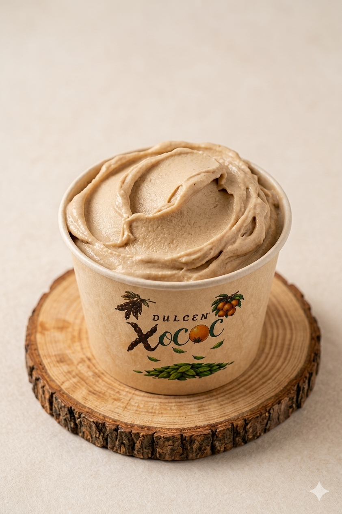
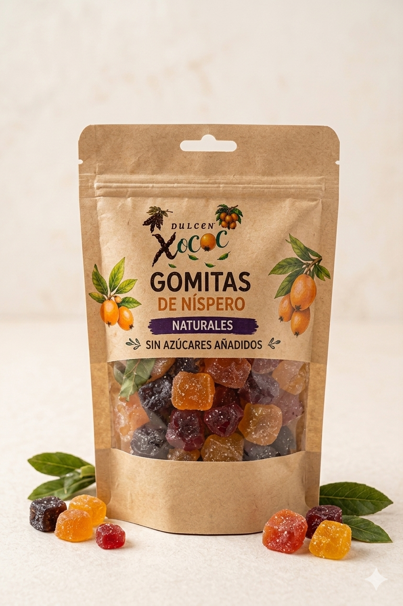

Somos un equipo multidisciplinario apasionado por la innovación alimentaria y la tecnología. Desde el desarrollo de nuestras recetas hasta la plataforma digital donde nos visitas, cada detalle está cuidado por manos comprometidas con tu bienestar.Rescatamos la herencia del mezquite y el níspero para crear snacks que alimentan el alma y el cuerpo, conectando la tradición con tu paladar.

¿Qué Ofrecemos?
Nuestra selección artesanal de productos naturales.

Nieves Ancestrales

Gomitas de Níspero
¿Para quién va dirigido?
Personas que buscan disfrutar de un postre natural, sin azúcares refinados, cuidando su bienestar y el de sus seres queridos.
Comunidad con Diabetes y Prediabetes
Es nuestro sector prioritario. Personas que buscan un snack seguro que no genere picos de glucosa, permitiéndoles disfrutar de un postre (nieve o gomitas) sin descuidar su tratamiento médico o estabilidad metabólica.
Consumidores Conscientes y "Fitness"
Personas que no necesariamente tienen una enfermedad, pero que evitan los azúcares refinados y edulcorantes artificiales. Buscan opciones naturales, artesanales y con beneficios nutricionales reales (como la fibra del mezquite).
Familias y Adultos Mayores
Aquellos que desean cuidar la alimentación de sus seres queridos con productos de origen natural, valorando la facilidad de pedir a domicilio y recibir información clara sobre lo que están consumiendo.